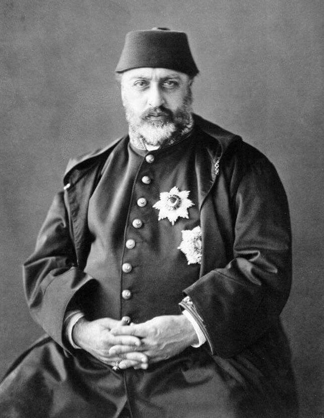

| önceki |  |
sonraki |
Sultan Abdülaziz, Osmanlı İmparatorluğu'nun otuz ikinci padişahıdır. Babası II. Mahmud, annesi Pertevniyal Vâlide Sultan'dır. Ağabeyi Abdülmecid'in vefatıyla tahta çıkmış ve 15 yıl hüküm sürmüştür. Pehlivan yapılı, güreşe, ava, spora ve resme meraklı; aynı zamanda Batı klasik müziğinde besteler ("Hicaz Sirto", "Valse Davet") yapacak kadar yetenekli bir sanatkârdır. Avrupa'ya resmi ve barışçıl ziyaret yapan ilk ve tek Osmanlı padişahıdır.
Dünya Üçüncüsü Donanma ve Avrupa Seyahati
- Avrupa Seyahati (1867): Fransa İmparatoru III. Napolyon'un davetiyle Paris Dünya Fuarı'na gitmiş; ardından İngiltere Kraliçesi Victoria'nın misafiri olarak Londra'ya, Belçika, Avusturya ve Macaristan'a geçmiştir. Batı başkentlerinde büyük bir tören ve ihtişamla karşılanmıştır.
- Dünyanın En Güçlü Zırhlı Donanması: Donanmaya büyük yatırımlar yapmış; İngiltere ve Fransa'nın ardından dünyanın en büyük 3. zırhlı donanmasını inşa ettirmiştir.
- İmar ve Saraylar: Boğaz'ın incileri olan Beylerbeyi Sarayı ve Çırağan Sarayı onun döneminde inşa edilmiştir. İstanbul Boğazı kıyıları anıtsal yapılarla donatılmıştır.
- Modern Kurumlar: Süveyş Kanalı açılmış (1869); Galatasaray Lisesi (Mekteb-i Sultanî) ve kimsesiz çocukların eğitimi için Dârüşşafaka kurulmuştur. Şûrâ-yı Devlet (Danıştay) ve Yargıtay'ın temelleri atılmıştır.
- 1876 Darbesi ve Şehadeti: Hüseyin Avni Paşa ve Midhat Paşa önderliğindeki askeri cunta tarafından 30 Mayıs 1876'da tahttan indirilmiş; hapsedildiği Feriye Sarayı'nda 4 Haziran 1876'da bilek damarları kesilerek şehit edilmiştir. Ölümüne intihar süsü verilmeye çalışılsa da sonradan kurulan Yıldız Mahkemesi'nde cinayet olduğu kanıtlanmıştır.
Ailesi
- Eşleri:
- Hayrânıdil Kadın (Son Halife Abdülmecid Efendi ve Nazime Sultan'ın annesi)
- Dürrünev Kadın (Şehzade Yusuf İzzettin'in annesi)
- Edâdil Kadın
- Neşerek Kadın
- Gevheri Kadın
- Erkek çocukları:
- Şehzade Yusuf İzzettin Efendi (1857 – 1916)
- Son Halife Abdülmecid Efendi (1868 – 1944)
- Şehzade Mahmud Celaleddin (1862 – 1888)
- Şehzade Mehmed Selim (1866 – 1867)
- Şehzade Mehmed Şevket (1872 – 1899)
- Kız çocukları:
- Nazime Sultân
- Esma Sultân
- Emine Sultân
- Fatma Sultân
- Münire Sultân
Sultan Abdülaziz hakkında daha fazla bilgi için buraya tıklayın.